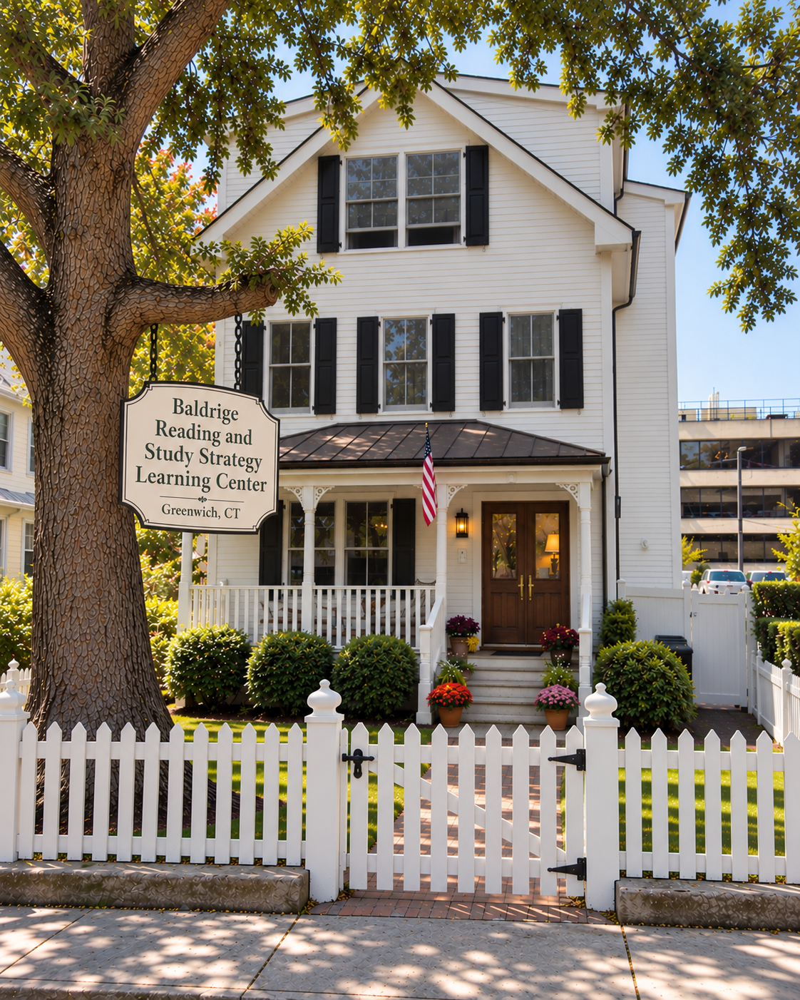
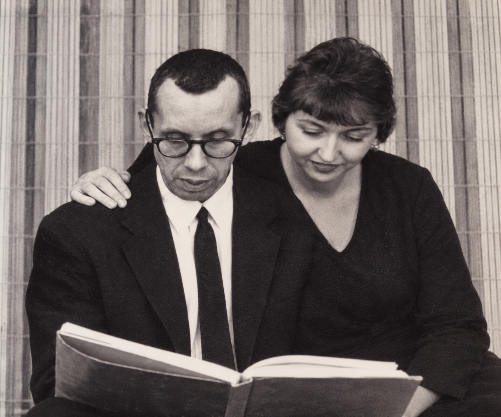
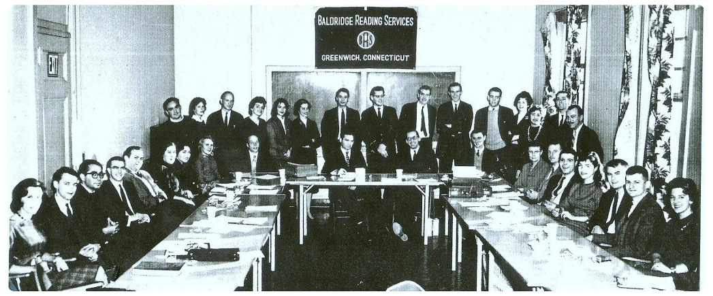
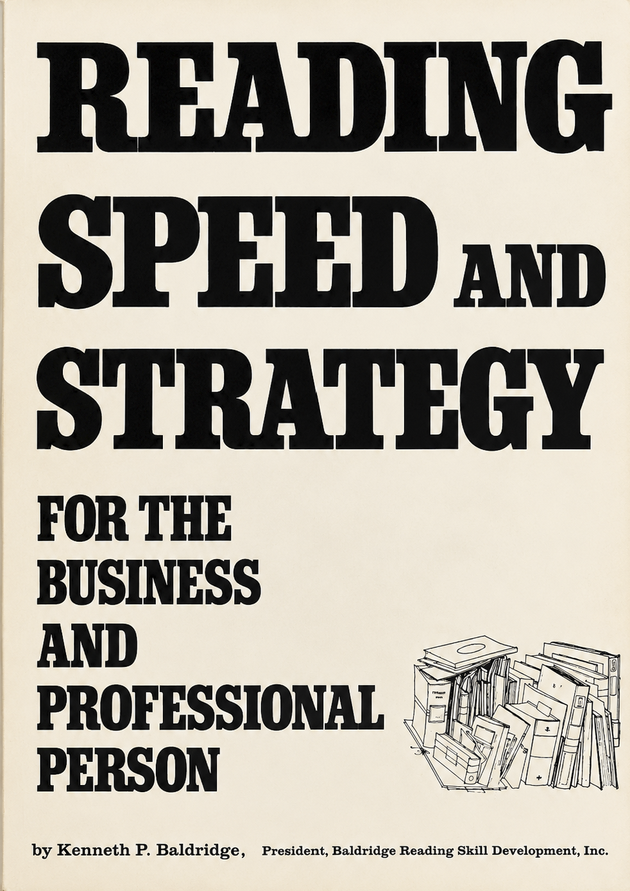
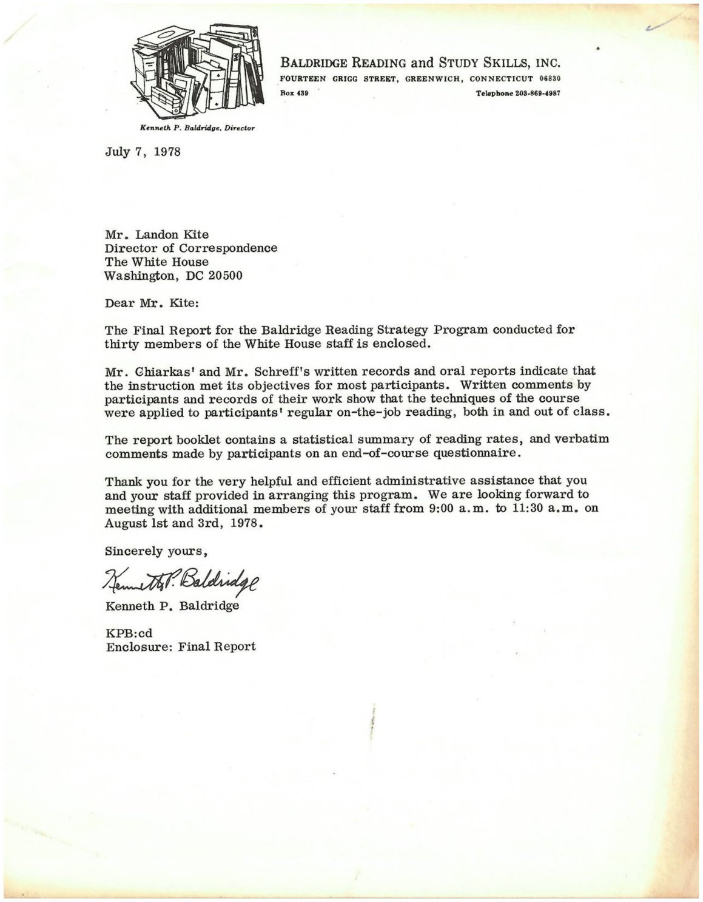
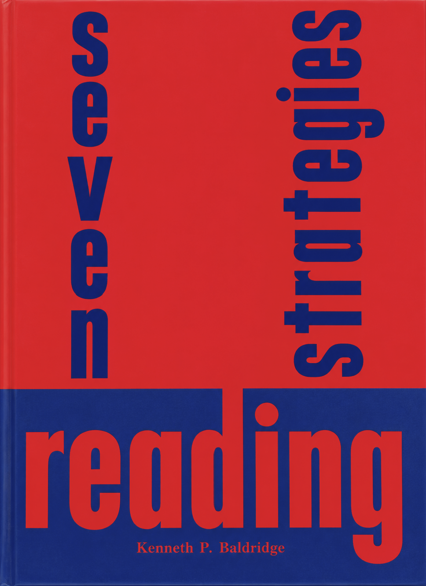
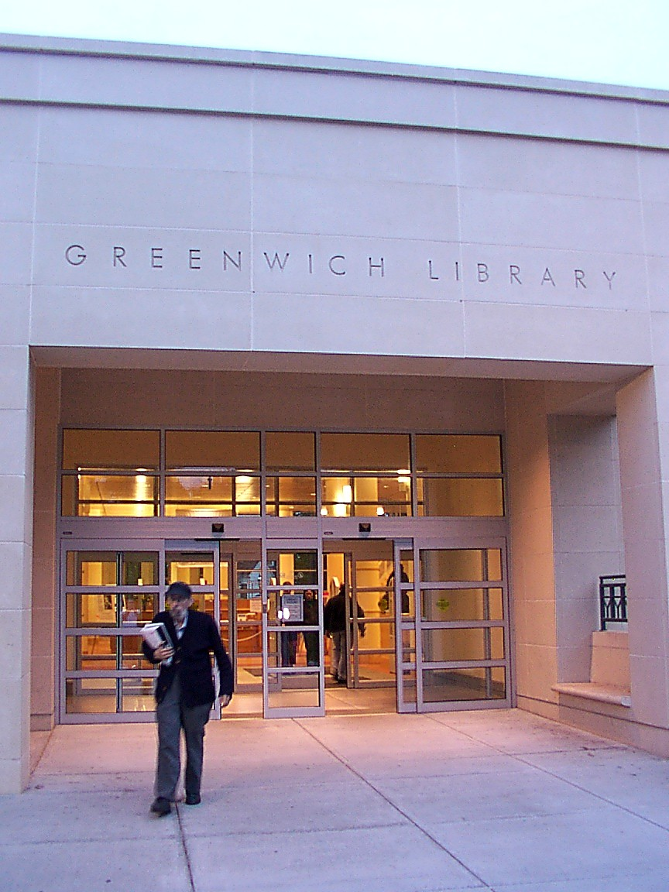
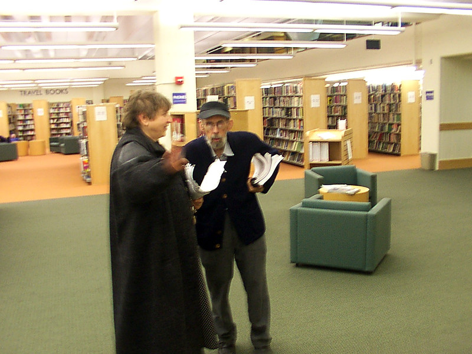
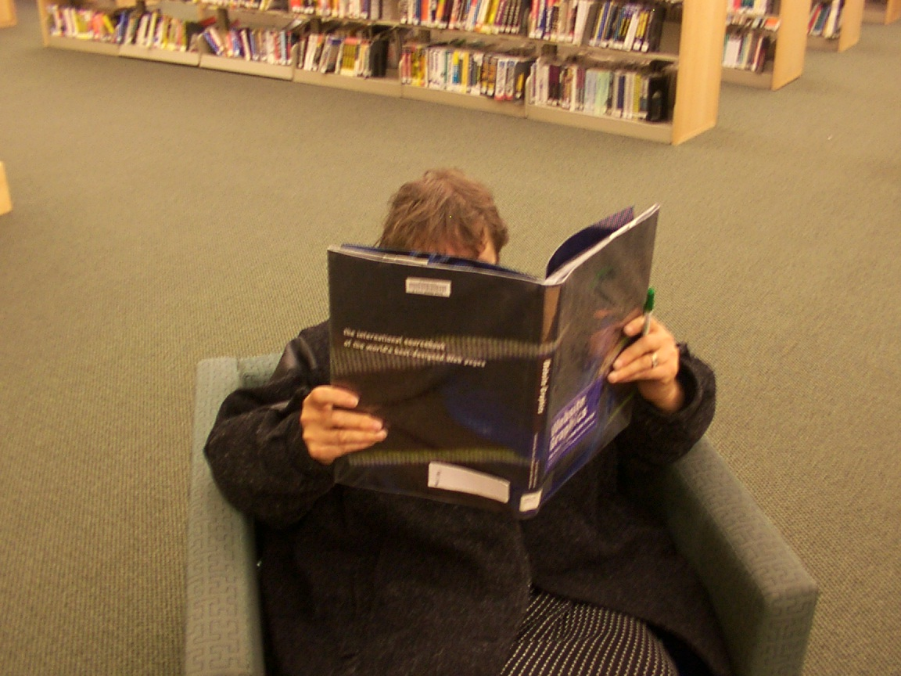
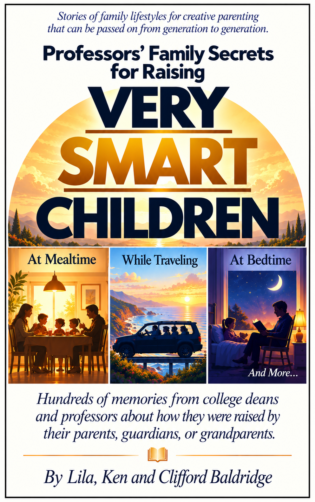

The Baldridge Family Legacy
Teaching students to read faster and study smarter since 1956 in Greenwich, Connecticut.

How It Began
My parents met in New York City in the 1950s. My father, Kenneth Patrick Baldridge, earned his degree at the University of Cincinnati, where he was a varsity fencer. My mother, Lila, earned a master's degree in teaching at Columbia University.
Together they founded Baldridge Reading in 1956 and opened its office in Greenwich, Connecticut. The company grew to 30 teachers and 30 salespeople.

1966: Reading Speed and Strategy
In 1966, my father published Reading Speed and Strategy for the Business and Professional Person. By then, he had set up or directed reading programs for more than 50 major corporations, including IBM, and had supervised reading programs at more than 350 secondary schools and colleges across the United States.

About the Author
Kenneth P. Baldridge has been responsible for setting up or directing reading programs for top and middle management personnel in more than 50 major corporations including the following:
- Western Electric Company
- Philadelphia Electric Company
- Time, Inc., for Time, Life and Fortune
- National Broadcasting Company
- Canada Dry Corporation
- International Business Machine Corporation
He is the co-author of a textbook which has been ordered in class quantities by schools and colleges, including the following:
- University of Pennsylvania
- College of William and Mary
- University of Chicago
- Tufts College
- Boston University
- Lehigh University
- University of California, L.A.
Mr. Baldridge has initiated and supervised the administration of developmental reading programs at more than 350 secondary schools and colleges throughout the United States.
He is well known as a lecturer before educational and business groups and has spent many years researching the reading process.
In the Heart of Greenwich
Our reading center was on Grigg Street, between Greenwich Avenue and Arch Street in the center of Greenwich. Our office was right next to where Diane's Books is today, and Diane still runs her family bookstore there.
We did all of our mailings to private schools, Ivy League colleges, and universities at the former post office on Greenwich Avenue.
My parents also owned the first health food store in Greenwich, along with its property on Greenwich Avenue, right next to the old movie theater that is now the Apple Store.
1978: The White House
An archivist at the Jimmy Carter Presidential Library and Museum recently recovered this July 7, 1978 letter. My father wrote it to Landon Kite, Director of Correspondence at The White House during President Jimmy Carter's administration, and it accompanied his final report.
My father and our reading program's teachers trained 30 White House staff members in advanced reading techniques. Their work helped staff refine the President's Daily Brief (PDB), the one-page international intelligence document the President receives each day, and read and respond to incoming White House correspondence.

"We greatly appreciate the program conducted by your staff. It was professionally conducted, your instructors were outstanding and the participants' remarks have been very complimentary in every way."
— Landon Kite, Director of Correspondence, The White HouseI went on this trip with my parents. I was too young to get security clearance for the training, so while my father and our instructors taught in the Indian Treaty Room, I toured the White House. I still remember the entire trip. We toured the city, from the Lincoln Memorial and the Washington Monument to the Smithsonian, and stayed at a hotel in Foggy Bottom.
We also visited Arlington National Cemetery, where my grandparents are buried together, along with the Tomb of the Unknown Soldier and the Eternal Flame at President John F. Kennedy's grave.
Our family comes from Kentucky and Tennessee and has a proud history of service. My grandfather was a World War I veteran who served in the cavalry and received a Purple Heart. My grandmother was made a Kentucky Colonel for running a one-room schoolhouse in Kentucky. My father was a World War II veteran who served in the South Pacific aboard a fast battleship, saw combat, and played the piccolo in the Navy band.
1979: Seven Reading Strategies
In 1979, my father wrote Seven Reading Strategies. Many Ivy League and private colleges and universities bought it in bulk, and it was sold as part of the faculty and teacher workshops our family taught through the late 1970s and 1980s. College libraries carried it as well.

The Greenwich Library
Back home in Greenwich, my parents loved the Greenwich Library, and we spent many hours there.



2001: Professors' Family Secrets for Raising Very Smart Children
In 2001, my parents and I wrote Professors' Family Secrets for Raising Very Smart Children, with hundreds of memories from college deans and professors about how they were raised by their parents, guardians, or grandparents.
